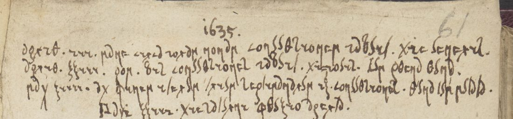

01 The slip and its writer
Sir Simonds D’Ewes (1602–1650), the parliamentary antiquary whose manuscripts make up much of the Harleian collection, wrote his private papers in an alphabet of his own. His diary of 1622–24 (Harley MS 481) is partly in it, and a 1915 University of Minnesota thesis deciphered that diary without printing the key. Folio 61 is a small slip mounted on a larger leaf, headed 1635 in ordinary figures, with the margin dates 1635/1636 in clear beside the January entry and a running count in cipher, huc usque xxxii, “thus far 32”, at the end of the August entries. A rule separates the summer entries from those of September and January. The foot of the slip runs under the mount and its last line is cut.

02 The alphabet
One sign per letter, words divided, numerals written with the letter signs (x, v, i as ξ, S, r). Several signs are ordinary letters used for other values, which is what makes the text look like garbled Latin script at first sight.
| sign | letter | sign | letter | sign | letter |
|---|---|---|---|---|---|
| ∂ | a | ω | h | 6 | q |
| 8 | b | r | i | x | r |
| < | c | ʒ | I (initial) | 2 | s |
| X | d | θ | l | / | t |
| c | e | ρ | m | S | u, v |
| φ | f | η | n | ξ | x |
| 9 | p and g | o | o | y | ii (in Maii) |
No sign for k, y or z occurs. The letters p and g are written with the same sign, or with two forms too close to separate here.
03 The reading
Dates are Julian (Old Style), as D’Ewes wrote them; the year then began on 25 March. [?] marks a doubtful word, {?} an unread one.

| Latin | English |
|---|---|
| Aprilis iii. mane circa horam nonam convulsionem habuit. die Veneris. | 3 April [1635]: in the morning about nine o’clock he had a convulsion. Friday. |
| Aprilis xxiii. pom. bis convulsiones habuit. die Iovis. cum plena luna. | 23 April, afternoon: he had convulsions twice. Thursday. At the full moon. |
| Maii xiiii. ad finem iterum trium septimanarum ix[?]. convulsiones. luna tum[?] mutata. | 14 May: at the end of three weeks again, convulsions. The moon then changed. |
| Maii xxiii. die Saturni fluxio aperta. | 23 May, Saturday: a flux broke out. |
| Maii xxv. inter horas xii et i convulsionem habuit. cum eo die plena luna. | 25 May: between twelve and one he had a convulsion, the moon being full that day. |
| Iunii xii. decrescente luna s[?]. primam convulsionem sensit. | 12 June, the moon waning: he felt the first convulsion. |
| Iunii xiii. successit alia mitis[?] convulsio. et Iun. xiiii. alia | 13 June: another, mild convulsion followed; and 14 June another. |
| Iul. xvii. ante lunae plenilunium quae in diem xix. sequentem incidit duae convulsiones mites. | 17 July, before the full moon, which fell on the 19th following: two mild convulsions. |
| Iul. xxiii. alia convulsio difficilis. | 23 July: another convulsion, a hard one. |
| Augusti ii. luna tum[?] nova difficilis [struck word] convulsio. | 2 August, the moon then new: a hard convulsion. |
| Augusti iii. mitis convulsio mane circa horam primam; cum inter meos fuit amplexus alia terribilis convulsio, quam a prandio non leve magno tremore vexit[?]. pomeridiano iterum {?} alia difficilis convulsio. | 3 August: a mild convulsion in the morning about one o’clock; when he was in my arms, another terrible convulsion, which after dinner shook him with a great trembling, not a light one. In the afternoon again {?} another hard convulsion. |
| Aug. xxiiii. mane alia difficilis convulsio. | 24 August, morning: another hard convulsion. |
| Aug. xx. parum post lunae plenilunium (quae in diem xviii. istius mensis incidebat) tres difficillimas convulsiones, in quorum tertia os ipsius pene ad aurem dextram convulsum, quod ante numquam observavi. eadem nocte ante horam i. duae aliae convulsiones sed mitiores. | 20 August, a little after the full moon (which fell on the 18th of this month): three very hard convulsions, in the third of which his mouth was drawn almost to his right ear, which I had never seen before. The same night before one o’clock two more convulsions, but milder. |
| Aug. xxi. post horam secundam mane et ante quintam duae aliae mites convulsiones. ante duodecimam horam alia difficilis. [margin:] huc usque xxxii. | 21 August, after two in the morning and before five: two more mild convulsions. Before twelve another hard one. [margin:] Thus far 32. |
| Aug. xxxi. absolutus[?] | 31 August: free[?] (lighter ink, above the rule) |
| Sept. xxi. die et ante horam primam noctis septima[?] agonia sed an {?} vel[?] alia praecedentia pede[?] convulsionem sed etiam epilepsia nativo[?]. | 21 September, by day and before one at night, a seventh[?] fit of agony; but whether {?} or other preceding … a convulsion, but also epilepsy … (partly unread) |
| Sept. xxvii. post horam secundam mane et ante vii. tres aliae agoniae. | 27 September, after two in the morning and before seven: three more fits of agony. |
| [margin 1635/1636] Ian. xxiiii. post xvii. septimanas liberationem nocte inter horam [nonam struck] viii et ix. convulsio difficilis. sperabam tamen quod evenerat ex coena nimia quam post convulsionem evomuit. | 24 January [1636], after seventeen weeks’ freedom, at night between eight and nine: a hard convulsion. I hoped, though, that it came from too large a supper, which he vomited up after the convulsion. |
| {?} … [hor]am nonam | (last line, trimmed under the mount) |
The Autobiography gives the end: the fits came more thickly in the spring of 1636, twelve in one night on 8–9 May, and the child died about two in the afternoon of Monday 9 May 1636, a year and nine months old. D’Ewes blamed “a proud, fretting, ill-conditioned woman for a nurse”, an issue opened in the child’s neck and the violent remedies of Dr Despotine of Bury, and the rickets that followed.
04 Method
- The images of R7759 were fetched from DECODE; the second image is only the verso showing through. A search of the BL catalogue named D’Ewes.
- No key to D’Ewes’s alphabet was found in print: the Minnesota thesis on his diary and Notestein’s 1923 edition of his parliamentary journal mention the cipher but give no table.
- Crib: a long word recurring on almost every line, <oηSSθ2ro, fits convulsio; a two-word phrase 9θcηd θSηd fits plena luna; Xrφφr<rθr2 fits difficilis. The month names and numerals at the start of each line supplied the rest.
- Checks against the calendar: 3 April 1635 was a Friday (die Veneris), 23 April a Thursday (die Iovis), 23 May a Saturday (die Saturni). The moon was full on 23 April, 19 July and 18 August and new on 2 August, as the slip says. On 25 May (“plena luna”) and 12 June (“decrescente”) it was not; the numerals are unambiguous at high magnification, so these are D’Ewes’s own slips or loose wording.
- The Autobiography (Halliwell’s edition, 1845) confirmed the start on 3 April 1635 and the count of forty-four fits.
- Two full transcription passes over line crops: 92.7% of words read after the first, 96.5% after re-cropping the doubtful words at three times the size.
05 What remains uncertain
- Line 30, the last line (about six words): trimmed under the mount; only “…am nonam” shows. Needs the leaf lifted.
- Line 13, last word 9oθS∂- (p/g, o, l, u, a): cramped at the edge, unread.
- Lines 24–25, sed an 2∂c<- / Scθ: faint and cramped; septima, pede and nativo in the same lines are doubtful (grade M).
- Doubtful words elsewhere (grade C): ix and tum (line 3), the suspension after luna (line 6), mitis (line 7), tum (line 11), vexit (line 14), absolutus (line 24).
- The shelfmark: DECODE says Harley MS 286, the BL catalogue Harley MS 289. Not resolved.
06 Sources
- British Library, Harley MS 286 f. 61: DECODE R7759 (image 1). Same-volume key records R7753–R7758 (ff. 80–87) are other material.
- British Library catalogue, 040-002046117 (Harley MS 289 f. 61r).
- J. O. Halliwell (ed.), The Autobiography and Correspondence of Sir Simonds D’Ewes, London 1845, vol. ii pp. 143–144 (archive.org).
- University of Minnesota thesis (1915) on D’Ewes’s diary of 1622–24 (UMN Conservancy); E. Bourcier (ed.), The Diary of Sir Simonds D’Ewes 1622–1624, Paris 1974; W. Notestein (ed.), The Journal of Sir Simonds D’Ewes, 1923.
Transcription, key and notes: harley286/ in the repository.